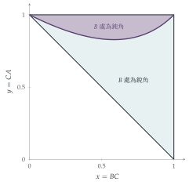

STEP III 1990，第 16 題
繼續之前，請先閱讀題目（原題為英文）。題目載於 STEP Support Programme 的題目資料庫： step.maths.org/questions/90-s3-q16
引子
在一根木棒上隨機選兩點，把它折斷。三段木棒能否組成三角形？著名的答案是：概率（probability）為 \(\frac14\)。如果能組成三角形，它是銳角（acute）三角形還是鈍角（obtuse）三角形？通常是鈍角三角形：所組成的三角形中，只有大約三分之一是銳角三角形。這類關於隨機圖形的問題，自十九世紀起便令概率學家樂此不疲，也是練習處理連續概率（continuous probability）的絕佳場地：區域內的一個隨機點、一個界定子區域的條件，以及一個計算其面積的積分。
本題採用兩種不同的折棒方法，並在每種情況下問出現鈍角的可能性有多大。答案 \(3 - 2\sqrt2\) 和 \(3 - 4\ln2\) 都是出人意表的數，卻源自簡單的幾何。
動筆之前
三個長度能組成三角形，當且僅當每一個都小於其餘兩個之和。如果三個長度之和為 \(L\)，這對最長的一個有何含意？邊 \(c\) 所對的角何時是鈍角？
\(c < a + b\) 連同 \(a + b + c = L\)，即 \(c < \frac L2\)；所以三段能組成三角形，正正是當每一段都短於總長度的一半。根據餘弦公式（cosine rule），\(c\) 所對的角是鈍角，正正是當 \(c^2 > a^2 + b^2\)。
逐步解題
階段 1 先折一次，再對半分
三段的長度是 \(X\)、\(\frac{1 - X}{2}\)、\(\frac{1 - X}{2}\)。兩段相等的木棒必定短於 \(\frac12\)，所以能組成三角形當且僅當 \(X < \frac12\)。這個三角形是等腰（isosceles）三角形；兩個相等的角都是銳角，所以只有當 \(X\) 所對的角是鈍角時，它才是鈍角三角形： \[X^2 > 2\Bigl(\frac{1 - X}{2}\Bigr)^2 = \frac{(1 - X)^2}{2}, \qquad\text{即}\qquad \sqrt2X > 1 - X, \quad X > \frac{1}{1 + \sqrt2} = \sqrt2 - 1.\] 已知 \(X < \frac12\) 時，\(X\) 在 \([0, \frac12]\) 上均勻分佈（uniform），所以 \[\mathrm{P}(\text{鈍角} \mid \text{三角形}) = \frac{\frac12 - (\sqrt2 - 1)}{\frac12} = 3 - 2\sqrt2 \approx 0.172. \qed\]
階段 2 第二種構造方法
設 \((x, y)\) 位於以 \((1, 0)\)、\((1, 1)\)、\((0, 1)\) 為頂點的三角形內，對邊長 \(x\)、\(y\) 和 \(2 - x - y\) 檢查三條三角不等式（triangle inequality）。
該區域是 \(\{x \leq 1, y \leq 1, x + y \geq 1\}\)。三條不等式分別是：\(x + y \geq 2 - x - y\)，即 \(x + y \geq 1\)；\(x + (2 - x - y) \geq y\)，即 \(y \leq 1\)；以及 \(y + (2 - x - y) \geq x\)，即 \(x \leq 1\)。它們在區域內全部成立（在區域的邊上等號成立，此時三角形是退化（degenerate）的）。■
\(B\) 處的角所對的邊是 \(CA = y\)。把條件 \(y^2 > x^2 + (2 - x - y)^2\) 寫成關於 \(y\) 的不等式。
展開得 \(y^2 > x^2 + 4 + x^2 + y^2 - 4x - 4y + 2xy\)，所以 \(4y - 2xy > 2x^2 - 4x + 4\)，即 \(2y(2 - x) > 2(x^2 - 2x + 2)\)。由於 \(2 - x > 0\)， \[\angle ABC \text{ 為鈍角} \iff y > \frac{x^2 - 2x + 2}{2 - x}. \qed\]
階段 3 面積
以 \(2 - x\) 除 \(x^2 - 2x + 2\)。然後求區域中位於曲線上方那部分的面積，再除以區域的面積 \(\frac12\)。
由於 \(x^2 - 2x + 2 = -x(2 - x) + 2\)，曲線是 \(y = -x + \frac{2}{2 - x}\)。它由 \((0, 1)\) 伸延至 \((1, 1)\)，而當 \(0 < x < 1\) 時，它位於直線 \(y = 1 - x\) 之上、\(y = 1\) 之下（圖 12.21.1）。鈍角區域位於曲線與 \(y = 1\) 之間，面積為 \[\int_0^1\Bigl(1 + x - \frac{2}{2 - x}\Bigr)\mathrm{d}x = 1 + \frac12 + \bigl[2\ln(2 - x)\bigr]_0^1 = \frac32 - 2\ln2.\] 除以 \(\frac12\)：\(\mathrm{P}(\angle ABC \text{ 為鈍角}) = 3 - 4\ln2 \approx 0.227\)。■

回顧
把幾何轉化為不等式。「能組成三角形」和「是鈍角三角形」都化成了各長度之間的不等式。
連續變量的條件概率（conditional probability）。已知 \(X < \frac12\) 時，\(X\) 在較小的區間上均勻分佈。
概率即面積之比。對於區域內均勻分佈的點，概率等於面積除以總面積。
背後的數學
經典的折棒問題
在兩個獨立而均勻分佈的點 \(U\) 和 \(V\) 處把木棒折斷。數對 \((U, V)\) 在單位正方形上均勻分佈，而三段能組成三角形，正正是當每一段都短於 \(\frac12\)：這個條件切去四個小三角形，總面積為 \(\frac34\)，餘下的概率是 \(\frac14\)。已知能組成三角形時，它是銳角三角形的概率是 \(\frac14\) 當中的 \(3\ln2 - 2 \approx 0.079\)，即大約 \(32\%\)。這三段木棒是均勻隨機分割（uniform random partition）的一個例子，它們的聯合分佈（joint distribution）是狄利克雷分佈（Dirichlet distribution），這種分佈出現在貝葉斯統計學（Bayesian statistics）中，也出現在描述資源如何隨機分配的模型中。
怎樣折斷木棒，大有關係
請留意，題目中的兩種方法，對聽起來相似的問題給出了不同的答案 \(3 - 2\sqrt2\) 和 \(3 - 4\ln2\)，而兩者又都與經典方法的答案不同。正如貝特朗（Bertrand）的弦（第 12.3 節）一樣，在指明具體程序之前，「隨機」一詞毫無意義。
關於隨機三角形的問題，是維多利亞時代流行的趣題。路易斯·卡羅（Lewis Carroll）的 Pillow Problems（1893 年）問及「隨機」選取的三角形是鈍角三角形的概率，而他的答案，正如本節的答案一樣，完全取決於他所選擇的隨機性模型。關於隨機三角形的問題一直帶來驚喜：例如，在正方形內均勻隨機選取三點，它們組成鈍角三角形的概率約為 \(0.725\)，這個數值到二十世紀才有人準確算出。
思維技巧
把隨機結果表示為區域內的一點，把事件表示為子區域，並以面積之比（或密度（density）的積分）計算概率。
在大學裏，這幅圖像是多元概率（multivariate probability）的基礎，也是變數代換公式（change-of-variables formula）的基礎；這條公式說明坐標改變時，密度如何隨之變換。
延伸練習
經典問題。證明：若在兩個獨立而均勻分佈的點處把木棒折斷，則各段能組成三角形的概率是 \(\frac14\)。
折斷較長的一段。在一個均勻分佈的點處把木棒折斷，然後在較長的一段上取一個均勻分佈的點，再把它折斷。證明三段能組成三角形的概率是 \(2\ln2 - 1 \approx 0.386\)。
銳角還是鈍角。在第 (ii) 部分中，求三角形 \(ABC\) 在 \(C\) 處（對邊為 \(AB = 2 - x - y\)）有鈍角的概率。由此求它有任何一個角是鈍角的概率。
最長一段的期望長度。對於經典的折棒問題，證明最長一段的期望（expected）長度是 \(\frac{11}{18}\)。
延伸閱讀
Martin Gardner, The Colossal Book of Mathematics（Norton），書中收錄了折棒問題。
Frederick Mosteller, Fifty Challenging Problems in Probability（Dover）。
Lewis Carroll, Pillow Problems（Dover，與 A Tangled Tale 合訂）。維多利亞時代的趣題，包括隨機三角形。